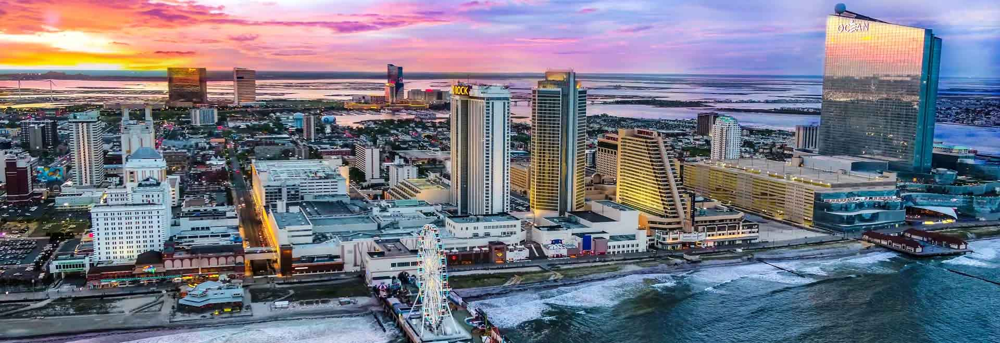

Trenton is the capital of New Jersey. Trenton is situated in the western part of the state of New Jersey, along the banks of the Delaware River which serves as the boundary between New Jersey and Pennsylvania. It is positioned in Mercer County.
Atlantic City

Atlantic city is known as the resort city due to it boardwalks, beach and casinos. Atlantic City is situated on Absecon Island along the Atlantic Ocean. It is located in southeastern New Jersey, approximately 127 miles southwest of New York City and 64 miles southeast of Philadelphia.
Jersey City
Jersey City is a major financial hub, with a growing number of financial institutions, banks, and investment firms establishing a presence in the city. It is located in Hudson County, New Jersey, and is part of the New York metropolitan area. It is situated along the western bank of the Hudson River, directly across from Lower Manhattan in New York City.